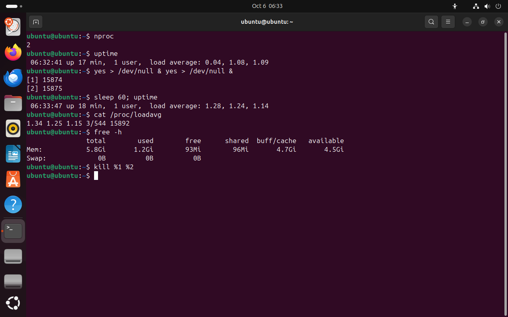

Часть 1 из 7
Нагрузка системы: uptime и load average
В этой части разберём, с чего начинается диагностика, что показывает средняя нагрузка load average и как сравнить её с числом процессорных ядер.
1.1 С чего начинается диагностика
На прошлом занятии мы запускали процессы, смотрели их состояния и завершали сигналами. Сегодня разберём, как найти процесс, из-за которого система работает медленно, и как вернуть ей нормальную скорость.
Диагностика начинается с жалобы: «сайт отвечает долго», «компьютер тормозит», «отчёт не строится». Такая жалоба — симптом. Чаще всего его причина — процесс, который забрал себе слишком много ресурса.
Диагностику ведут сверху вниз. Сначала смотрят на систему целиком: загружен ли процессор, хватает ли памяти. Если ресурса не хватает, ищут процесс, который его занял. Последний шаг — понять, кто запустил этот процесс и зачем.
1.2 Средняя нагрузка
Первая команда при любой жалобе на скорость — uptime. Она печатает текущее время, сколько система работает без перезагрузки, число вошедших пользователей и три числа load average.
Load average удобно представить как очередь в магазине. Ядра процессора — это кассы. Нагрузка 2 на двух кассах значит, что обе кассы заняты, а очереди нет. Нагрузка 4 на двух кассах — у каждой кассы стоит ещё по покупателю. Нагрузка 0,5 — одна касса половину времени простаивает.
Число ядер выводит команда nproc. Нагрузку сравнивают с этим числом: значение 2 для сервера с 16 ядрами — почти простой, для виртуальной машины с двумя ядрами — полная загрузка.
| Нагрузка относительно числа ядер | Что это значит |
|---|---|
| меньше числа ядер | процессор справляется, у части ядер есть свободное время |
| равна числу ядер | все ядра заняты, очереди почти нет |
| больше числа ядер | процессы ждут очереди к процессору — программы отвечают медленнее |
Три числа показывают, куда движется нагрузка. Если минутное значение больше пятнадцатиминутного, нагрузка выросла недавно. Если меньше — пик прошёл и система успокаивается.
1.3 Нагрузка на опыте
Те же три числа хранит файл /proc/loadavg. После них в файле стоят ещё два поля: сколько процессов выполняется прямо сейчас и сколько их всего, и PID последнего созданного процесса.
В опыте два процесса yes займут оба ядра виртуальной машины. Через минуту минутное значение заметно вырастет. Оно растёт плавно, потому что это среднее: до значения 2 оно дойдёт только через несколько минут.
Команда free -h показывает память: всего, занято, свободно. Столбец available — сколько памяти программы могут получить прямо сейчас, с учётом кеша, который ядро освободит по требованию. Ориентируются на него.
nproc# число ядерчто делает
Что делает команда. Печатает число ядер процессора, доступных программам.
По частям:
nproc- напечатать число ядер процессора
uptime# нагрузка в покоечто делает
Что делает команда. Печатает время, сколько система работает, число пользователей и нагрузку за 1, 5 и 15 минут.
По частям:
uptime- напечатать время работы системы и нагрузку
yes > /dev/null & yes > /dev/null &# два процесса, занимающих процессорчто делает
Что делает команда. Запускает в фоне два процесса yes; каждый без остановки пишет строку y в «корзину» и занимает целое ядро.
По частям:
yes- бесконечно печатать строку y
>- записать вывод в файл
/dev/null- устройство, которое выбрасывает всё записанное
&- запустить команду слева в фоне и сразу продолжить
yes- бесконечно печатать строку y
>- записать вывод в файл
/dev/null- устройство, которое выбрасывает всё записанное
&- запустить команду слева в фоне и сразу продолжить
sleep 60; uptime# через минутучто делает
Что делает команда. Ждёт минуту и печатает нагрузку снова.
По частям:
sleep- ничего не делать указанное число секунд
60- сколько секунд
;- разделитель: выполнить следующую команду после этой
uptime- напечатать время работы системы и нагрузку
cat /proc/loadavg# те же числа из файла ядрачто делает
Что делает команда. Выводит файл ядра с тремя средними нагрузками, числом выполняющихся процессов и PID последнего созданного процесса.
По частям:
cat- вывести содержимое файла
/proc/loadavg- какой файл (абсолютный путь)
free -h# памятьчто делает
Что делает команда. Выводит, сколько памяти всего, занято, свободно и доступно программам, в удобных единицах.
По частям:
free- вывести сведения о памяти
-h- показывать размеры в удобных единицах: Ki, Mi, Gi
kill %1 %2# завершить оба процессачто делает
Что делает команда. Посылает TERM заданиям 1 и 2 текущей оболочки.
По частям:
kill- послать процессу сигнал
%1- какому процессу, задание номер 1
%2- какому процессу, задание номер 2
- 1два ядра
- 2в покое: 0,04
- 3через минуту с двумя yes: 1,28
- 45 и 15 минут меняются медленнее
- 5те же три средних в /proc/loadavg
- 63 процесса выполняются из 544
- 7available — доступная память


Весь снимок ↗Число ядер, нагрузка до и после запуска двух процессов yes, память.
Что показывает снимок. У машины два ядра. В покое минутная нагрузка 0,04; через минуту с двумя процессами yes — 1,28. Пяти- и пятнадцатиминутные значения выше нуля и в покое: они ещё помнят прежние опыты. В /proc/loadavg те же три числа и 3 выполняющихся процесса из 544; доступно 4,5 ГиБ памяти.
Где это пригодится. При жалобе «сервер тормозит» сначала выполняют uptime и nproc: нагрузка выше числа ядер сразу говорит, что процессы стоят в очереди к процессору.
Итоги части 1
- Диагностику ведут сверху вниз: система целиком, затем процесс, затем причина.
- Load average — средняя длина очереди к процессору за 1, 5 и 15 минут.
- Нагрузку сравнивают с числом ядер
nproc: больше числа ядер — процессы ждут. uptimeи/proc/loadavgпоказывают нагрузку,free -h— память; ориентируются на столбецavailable.
В отчётСнимок нагрузки до и после запуска yes: сравните числа с количеством ядер.